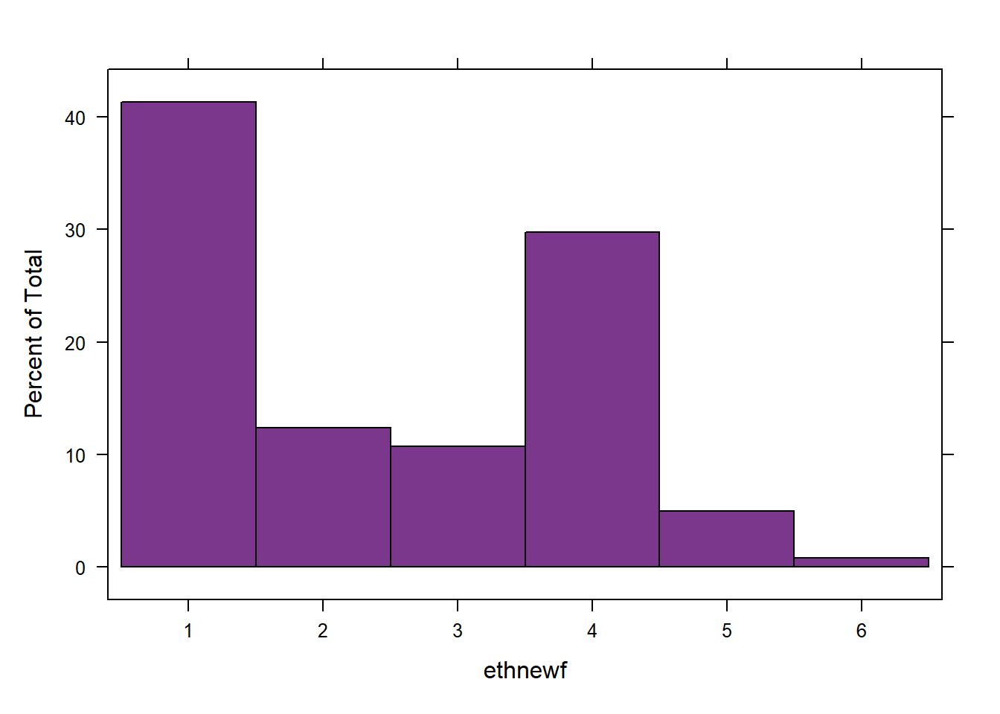
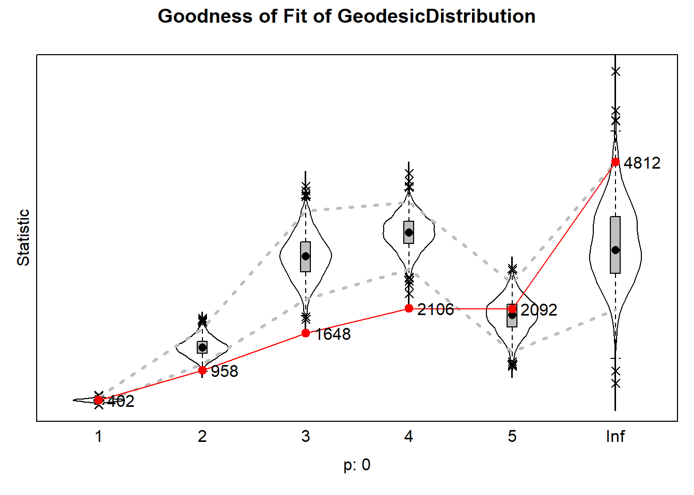
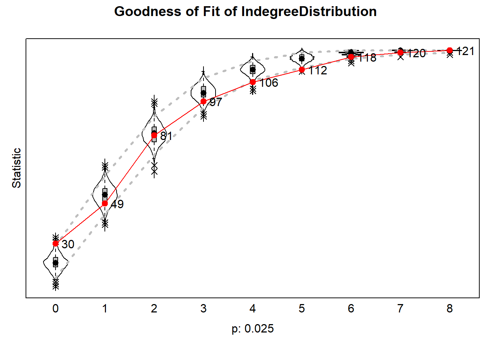
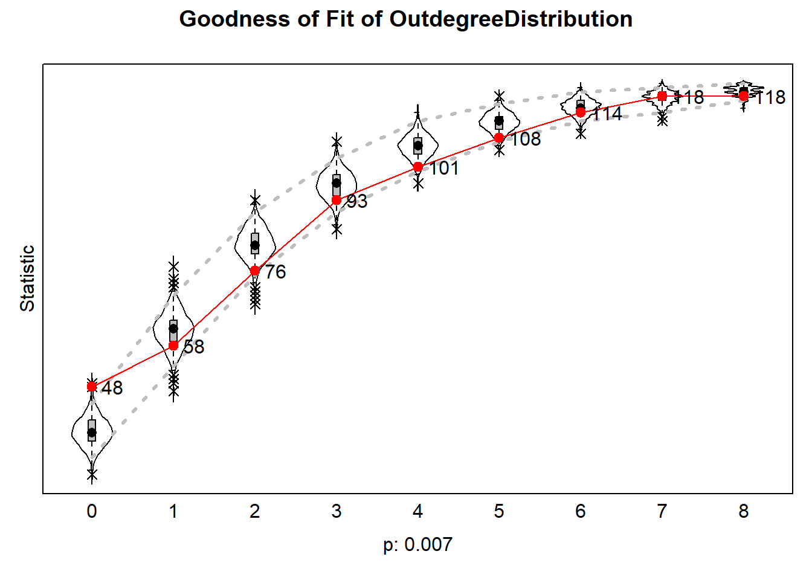
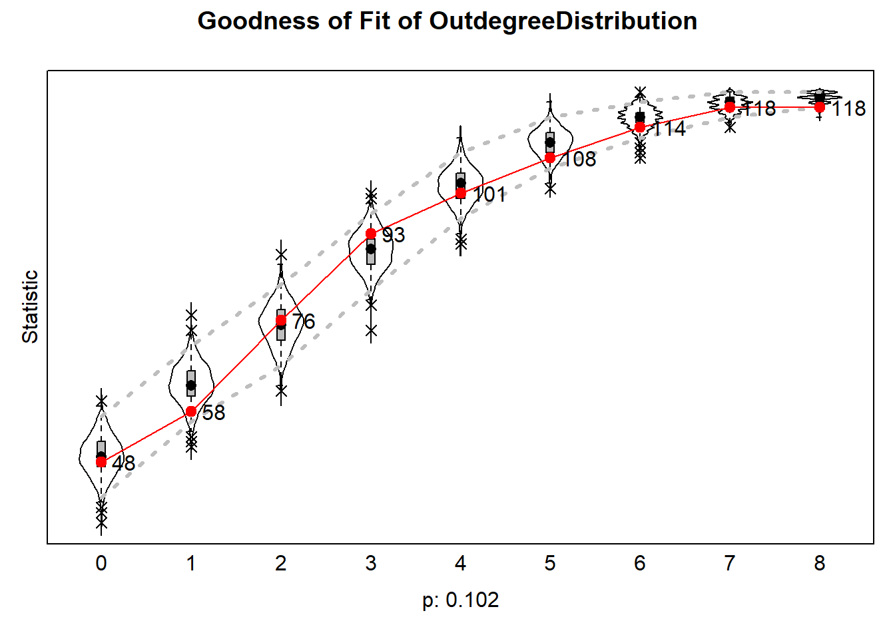

Analyses and Results
Susanna
2026-09-29
Cleaning environment + checking packages
rm(list = ls())
#function by Jochem
fpackage.check <- function(packages) {
lapply(packages, FUN = function(x) {
if (!require(x, character.only = TRUE)) {
install.packages(x, dependencies = TRUE)
library(x, character.only = TRUE)
}
})
}
fsave <- function(x, file = NULL, location = "./data/processed/") {
ifelse(!dir.exists("data"), dir.create("data"), FALSE)
ifelse(!dir.exists("data/processed"), dir.create("data/processed"), FALSE)
if (is.null(file))
file = deparse(substitute(x))
datename <- substr(gsub("[:-]", "", Sys.time()), 1, 8)
totalname <- paste(location, datename, file, ".rda", sep = "")
save(x, file = totalname) #need to fix if file is reloaded as input name, not as x.
}
fload <- function(filename) {
load(filename)
get(ls()[ls() != "filename"])
}
fshowdf <- function(x, ...) {
knitr::kable(x, digits = 2, "html", ...) %>%
kableExtra::kable_styling(bootstrap_options = c("striped", "hover")) %>%
kableExtra::scroll_box(width = "100%", height = "300px")
}
colorize <- function(x, color) {
sprintf("<span style='color: %s;'>%s</span>", color, x)
}
packages <- c("sna","ape", "network", "devtools", "igraph", "RSiena", "tidyverse", "stringdist", "stringi")
lapply(packages, require, character.only=T)## Loading required package: sna## Warning: package 'sna' was built under R version 4.5.3## Loading required package: statnet.common## Warning: package 'statnet.common' was built under R version 4.5.3##
## Attaching package: 'statnet.common'## The following objects are masked from 'package:base':
##
## attr, order, replace## Loading required package: network## Warning: package 'network' was built under R version 4.5.3##
## 'network' 1.20.0 (2026-02-06), part of the Statnet Project
## * 'news(package="network")' for changes since last version
## * 'citation("network")' for citation information
## * 'https://statnet.org' for help, support, and other information## sna: Tools for Social Network Analysis
## Version 2.8 created on 2024-09-07.
## copyright (c) 2005, Carter T. Butts, University of California-Irvine
## For citation information, type citation("sna").
## Type help(package="sna") to get started.## Loading required package: ape## Warning: package 'ape' was built under R version 4.5.3##
## Attaching package: 'ape'## The following objects are masked from 'package:sna':
##
## consensus, degree## Loading required package: devtools## Warning: package 'devtools' was built under R version 4.5.3## Loading required package: usethis## Warning: package 'usethis' was built under R version 4.5.3## Loading required package: igraph## Warning: package 'igraph' was built under R version 4.5.3##
## Attaching package: 'igraph'## The following objects are masked from 'package:ape':
##
## degree, edges, mst, ring## The following objects are masked from 'package:sna':
##
## betweenness, bonpow, closeness, components, degree, dyad.census,
## evcent, hierarchy, is.connected, neighborhood, triad.census## The following objects are masked from 'package:network':
##
## %c%, %s%, add.edges, add.vertices, delete.edges, delete.vertices,
## get.edge.attribute, get.edges, get.vertex.attribute, is.bipartite,
## is.directed, list.edge.attributes, list.vertex.attributes,
## set.edge.attribute, set.vertex.attribute## The following objects are masked from 'package:stats':
##
## decompose, spectrum## The following object is masked from 'package:base':
##
## union## Loading required package: RSiena## Warning: package 'RSiena' was built under R version 4.5.3## Loading required package: tidyverse## Warning: package 'tidyverse' was built under R version 4.5.3## Warning: package 'tibble' was built under R version 4.5.3## Warning: package 'tidyr' was built under R version 4.5.3## Warning: package 'readr' was built under R version 4.5.2## Warning: package 'dplyr' was built under R version 4.5.3## Warning: package 'stringr' was built under R version 4.5.3## Warning: package 'forcats' was built under R version 4.5.2## ── Attaching core tidyverse packages ────────────── tidyverse 2.0.0 ──
## ✔ dplyr 1.2.1 ✔ readr 2.1.6
## ✔ forcats 1.0.1 ✔ stringr 1.6.0
## ✔ ggplot2 4.0.0 ✔ tibble 3.3.1
## ✔ lubridate 1.9.4 ✔ tidyr 1.3.2
## ✔ purrr 1.1.0## ── Conflicts ──────────────────────────────── tidyverse_conflicts() ──
## ✖ lubridate::%--%() masks igraph::%--%()
## ✖ dplyr::as_data_frame() masks tibble::as_data_frame(), igraph::as_data_frame()
## ✖ purrr::compose() masks igraph::compose()
## ✖ tidyr::crossing() masks igraph::crossing()
## ✖ dplyr::filter() masks stats::filter()
## ✖ dplyr::lag() masks stats::lag()
## ✖ purrr::simplify() masks igraph::simplify()
## ✖ dplyr::where() masks ape::where()
## ℹ Use the conflicted package (<http://conflicted.r-lib.org/>) to force all conflicts to become errors
## Loading required package: stringdist## Warning: package 'stringdist' was built under R version 4.5.2##
## Attaching package: 'stringdist'
##
## The following object is masked from 'package:tidyr':
##
## extract
##
## Loading required package: stringi## Warning: package 'stringi' was built under R version 4.5.3## [[1]]
## [1] TRUE
##
## [[2]]
## [1] TRUE
##
## [[3]]
## [1] TRUE
##
## [[4]]
## [1] TRUE
##
## [[5]]
## [1] TRUE
##
## [[6]]
## [1] TRUE
##
## [[7]]
## [1] TRUE
##
## [[8]]
## [1] TRUE
##
## [[9]]
## [1] TRUEload("./data/EduBridgeforRSiena.RData")1 Descriptive Analysis
1.1 Visualisation
hangingt1nona <- hanging_df_t1
hangingt1nona[hangingt1nona==9]<- 0
hangingt1nona <- as.matrix(hangingt1nona)
hangingt1 <- graph_from_adjacency_matrix(hangingt1nona, mode = "directed", weighted = NULL, diag = TRUE, add.colnames = NA, add.rownames = NA)
rangegray <- colorRampPalette(c("grey91", "grey50", "grey30", "black"))
nbins <- 5
colourbetweenness <-rangegray(nbins)
colourpareduhigh <- ifelse(is.na(parenteduhigh), "white", ifelse(parentedudif==1, "mediumorchid4", ifelse(parenteduhigh==1, "#3A87AD", "lightgoldenrod")))
colourparedudif <- ifelse(is.na(parentedudif), "grey91", ifelse(parentedudif==1, "mediumorchid4", "grey91"))
V(hangingt1)$size = igraph::betweenness(hangingt1, normalized = T, directed = TRUE)*50 + 7
plot(hangingt1,
vertex.color = adjustcolor(colourpareduhigh, alpha.f = .5),
vertex.frame.color = colourparedudif,
vertex.frame.width = 2,
vertex.label = NA,
edge.curved = 0.2,
edge.arrow.size = 0.2,
edge.color = colourbetweenness[cut(igraph::edge_betweenness(hangingt1), breaks=nbins )],
layout = layout.fruchterman.reingold,
main = "Wave 1")
hangingt2nona <- hanging_df_t2
hangingt2nona[hangingt2nona==9]<- 0
hangingt2nona <- as.matrix(hangingt2nona)
hangingt2 <- graph_from_adjacency_matrix(hangingt2nona, mode = "directed", weighted = NULL, diag = TRUE, add.colnames = NA, add.rownames = NA)
layoutfr2 <- layout.fruchterman.reingold(hangingt2)## Warning: `layout.fruchterman.reingold()` was deprecated in igraph 2.1.0.
## ℹ Please use `layout_with_fr()` instead.
## This warning is displayed once per session.
## Call `lifecycle::last_lifecycle_warnings()` to see where this warning
## was generated.V(hangingt1)$size = igraph::degree(hangingt1)*0.35 + 7
V(hangingt2)$size = igraph::degree(hangingt2)*0.35 + 7
{png("plot2.png", width = 14, height = 7, units = "in", res = 300)
par(mfrow = c(1, 2))
plot(hangingt1,
vertex.color = adjustcolor(colourpareduhigh, alpha.f = .5),
vertex.frame.color = colourparedudif,
vertex.frame.width = 2,
vertex.label = NA,
edge.curved = 0.2,
edge.arrow.size = 0.2,
edge.color = colourbetweenness[cut(igraph::edge_betweenness(hangingt1), breaks=nbins )],
layout = layoutfr2,
main = "Wave 1")
legend("topleft", c("university", "no university", "mixed", "missing"), pch = 21, col = "grey91", pt.bg = c("#3A87AD", "lightgoldenrod", "mediumorchid4", "white"), pt.cex = 1,
cex = 0.8, bty = "n", ncol = 1)
plot(hangingt2,
vertex.color = adjustcolor(colourpareduhigh, alpha.f = .5),
vertex.frame.color = colourparedudif,
vertex.frame.width = 2,
vertex.label = NA,
edge.curved = 0.2,
edge.arrow.size = 0.2,
edge.color = colourbetweenness[cut(igraph::edge_betweenness(hangingt2), breaks=nbins )],
layout = layoutfr2,
main = "Wave 2")
dev.off()}## png
## 2knitr::include_graphics("plot2.png") ## Tie evolution
## Tie evolution
dyad_census(hangingt1)## $mut
## [1] 93
##
## $asym
## [1] 209
##
## $null
## [1] 6958dyad_census(hangingt2)## $mut
## [1] 60
##
## $asym
## [1] 150
##
## $null
## [1] 7050Between t1 and t2, we can observe a substantial reduction in the number of ties within students’ hanging out network. Whereas at t1 a total number of 302 pairs were connected, 93 of which were reciprocal connections, at t2, only 210 connections remain. This entails a drop of 30.5% of the initial number of dyads. The evolution of hanging out networks in this community of university students is thus strongly shaped by endowment, i.e. the decision to maintain or break a tie.
edge_density(hangingt1)## [1] 0.02720386edge_density(hangingt2)## [1] 0.01859504degree_distribution(hangingt1, cumulative = FALSE)## [1] 0.123966942 0.033057851 0.090909091 0.082644628 0.066115702 0.090909091
## [7] 0.066115702 0.074380165 0.041322314 0.099173554 0.033057851 0.024793388
## [13] 0.033057851 0.033057851 0.033057851 0.008264463 0.016528926 0.024793388
## [19] 0.000000000 0.008264463 0.008264463 0.000000000 0.008264463degree_distribution(hangingt2, cumulative = FALSE)## [1] 0.140495868 0.082644628 0.107438017 0.123966942 0.107438017 0.123966942
## [7] 0.074380165 0.049586777 0.041322314 0.074380165 0.016528926 0.016528926
## [13] 0.016528926 0.000000000 0.008264463 0.000000000 0.008264463 0.000000000
## [19] 0.000000000 0.0082644631.2 Average Shortest Path Length
mean_distance(hangingt1, directed = T, unconnected = T, details = T)## $res
## [1] 4.840779
##
## $unconnected
## [1] 8566mean_distance(hangingt2, directed = T, unconnected = T, details = T)## $res
## [1] 4.591732
##
## $unconnected
## [1] 11593The average shortest path length between vectors is 4.84 at t1, and, surprisingly, decreases to 4.59 at t2 - despite the reduction in the total number of connected pairs.
1.3 Triad Census
hangingt1m <- as.matrix(hanging_df_t1)
hangingt2m <- as.matrix(hanging_df_t2)
sna::triad.census(hangingt1m)## 003 012 102 021D 021U 021C 111D 111U 030T 030C 201 120D 120U 120C
## [1,] 185654 19612 9095 62226 231 208 247 920 2244 2 92 1046 6048 13
## 210 300
## [1,] 134 208sna::triad.census(hangingt2m)## 003 012 102 021D 021U 021C 111D 111U 030T 030C 201 120D 120U 120C
## [1,] 206607 14432 6184 53311 117 112 88 1050 1256 0 54 538 4019 13
## 210 300
## [1,] 102 97Between t1 and t2, we can observe a reduction in all triad types except for the 111U constellation, which raises from occurring 920 times to occurring 1050 times, and the 120C constellation, which remains constant.
1.4 Segregation
hangingt1m <- as.matrix(hanging_df_t1)
hangingt2m <- as.matrix(hanging_df_t2)
# step 1: calculate distances
geodistances <- geodist(hangingt1m, count.paths = TRUE)
geodistances <- geodistances$gdist
# set the distance to yourself as Inf
diag(geodistances) <- Inf
# step 2: define a distance decay function. This one is pretty standard in the spatial autocorrelation literature but actually pretty arbitrary.
weights2 <- exp(-geodistances)#Jochem's formula for Moran's I
fMoran.I <- function(x, weight, scaled = FALSE, na.rm = FALSE, alternative = "two.sided", rowstandardize = TRUE) {
if (rowstandardize) {
if (dim(weight)[1] != dim(weight)[2])
stop("'weight' must be a square matrix")
n <- length(x)
if (dim(weight)[1] != n)
stop("'weight' must have as many rows as observations in 'x'")
ei <- -1/(n - 1)
nas <- is.na(x)
if (any(nas)) {
if (na.rm) {
x <- x[!nas]
n <- length(x)
weight <- weight[!nas, !nas]
} else {
warning("'x' has missing values: maybe you wanted to set na.rm = TRUE?")
return(list(observed = NA, expected = ei, sd = NA, p.value = NA))
}
}
ROWSUM <- rowSums(weight)
ROWSUM[ROWSUM == 0] <- 1
weight <- weight/ROWSUM
s <- sum(weight)
m <- mean(x)
y <- x - m
cv <- sum(weight * y %o% y)
v <- sum(y^2)
obs <- (n/s) * (cv/v)
if (scaled) {
i.max <- (n/s) * (sd(rowSums(weight) * y)/sqrt(v/(n - 1)))
obs <- obs/i.max
}
S1 <- 0.5 * sum((weight + t(weight))^2)
S2 <- sum((apply(weight, 1, sum) + apply(weight, 2, sum))^2)
s.sq <- s^2
k <- (sum(y^4)/n)/(v/n)^2
sdi <- sqrt((n * ((n^2 - 3 * n + 3) * S1 - n * S2 + 3 * s.sq) - k * (n * (n - 1) * S1 - 2 * n *
S2 + 6 * s.sq))/((n - 1) * (n - 2) * (n - 3) * s.sq) - 1/((n - 1)^2))
alternative <- match.arg(alternative, c("two.sided", "less", "greater"))
pv <- pnorm(obs, mean = ei, sd = sdi)
if (alternative == "two.sided")
pv <- if (obs <= ei)
2 * pv else 2 * (1 - pv)
if (alternative == "greater")
pv <- 1 - pv
list(observed = obs, expected = ei, sd = sdi, p.value = pv)
} else {
if (dim(weight)[1] != dim(weight)[2])
stop("'weight' must be a square matrix")
n <- length(x)
if (dim(weight)[1] != n)
stop("'weight' must have as many rows as observations in 'x'")
ei <- -1/(n - 1)
nas <- is.na(x)
if (any(nas)) {
if (na.rm) {
x <- x[!nas]
n <- length(x)
weight <- weight[!nas, !nas]
} else {
warning("'x' has missing values: maybe you wanted to set na.rm = TRUE?")
return(list(observed = NA, expected = ei, sd = NA, p.value = NA))
}
}
# ROWSUM <- rowSums(weight) ROWSUM[ROWSUM == 0] <- 1 weight <- weight/ROWSUM
s <- sum(weight)
m <- mean(x)
y <- x - m
cv <- sum(weight * y %o% y)
v <- sum(y^2)
obs <- (n/s) * (cv/v)
if (scaled) {
i.max <- (n/s) * (sd(rowSums(weight) * y)/sqrt(v/(n - 1)))
obs <- obs/i.max
}
S1 <- 0.5 * sum((weight + t(weight))^2)
S2 <- sum((apply(weight, 1, sum) + apply(weight, 2, sum))^2)
s.sq <- s^2
k <- (sum(y^4)/n)/(v/n)^2
sdi <- sqrt((n * ((n^2 - 3 * n + 3) * S1 - n * S2 + 3 * s.sq) - k * (n * (n - 1) * S1 - 2 * n *
S2 + 6 * s.sq))/((n - 1) * (n - 2) * (n - 3) * s.sq) - 1/((n - 1)^2))
alternative <- match.arg(alternative, c("two.sided", "less", "greater"))
pv <- pnorm(obs, mean = ei, sd = sdi)
if (alternative == "two.sided")
pv <- if (obs <= ei)
2 * pv else 2 * (1 - pv)
if (alternative == "greater")
pv <- 1 - pv
list(observed = obs, expected = ei, sd = sdi, p.value = pv)
}
}fMoran.I(parenteduhigh, scaled = FALSE, weight = weights2, na.rm = TRUE, rowstandardize = FALSE)## $observed
## [1] -0.007703496
##
## $expected
## [1] -0.008333333
##
## $sd
## [1] 0.008647913
##
## $p.value
## [1] 0.9419405We find no evidence for segregation based on parental educational attainment in hanging out networks of the first wave.
# step 1: calculate distances
geodistances2 <- geodist(hangingt2m, count.paths = TRUE)
geodistances2 <- geodistances2$gdist
# set the distance to yourself as Inf
diag(geodistances2) <- Inf
# step 2: define a distance decay function. This one is pretty standard in the spatial autocorrelation literature but actually pretty arbitrary.
weights3 <- exp(-geodistances2)
fMoran.I(parenteduhigh, scaled = FALSE, weight = weights3, na.rm = TRUE, rowstandardize = FALSE)## $observed
## [1] -0.01137761
##
## $expected
## [1] -0.008333333
##
## $sd
## [1] 0.00920677
##
## $p.value
## [1] 0.740904We also find no evidence for segregation based on parental educational levels in the second wave.
2 Explanatory Analysis
2.1 Model input preparation
Get Network, Separate waves
#wave 1 = hangingt1, wave 2 = hangingt2
hangingt1m <- as.matrix(hanging_df_t1)
hangingt2m <- as.matrix(hanging_df_t2)
#diagonals to zero
diag(hangingt1m) <- 0
diag(hangingt2m) <- 0
#missings to NA
hangingt1mwna <- hangingt1m
hangingt1mwna[hangingt1mwna == 9] <- 10
hangingt2mwna <- hangingt2m
hangingt2mwna[hangingt2mwna == 9] <- 10
#nets into array
hanging_array <- array(data = c(hangingt1mwna, hangingt2mwna), dim = c(dim(hangingt1mwna), 2))
#dependent
net <- sienaDependent(hanging_array)Covariates: parenteduhigh, parentedudif, ethnew, gendernew
gendercov <- coCovar(gendernew) #constant covariate
ethcov <- coCovar(ethnew)
paredudifcov <- coCovar(parentedudif)
pareduhighcov <- coCovar(parenteduhigh)
mydata <- sienaDataCreate(net, gendercov, ethcov, paredudifcov, pareduhighcov)Effects
myeff0910 <- getEffects(mydata)
# effectsDocumentation(myeff0910)ifelse(!dir.exists("results"), dir.create("results"), FALSE)## [1] FALSEprint01Report(mydata, modelname = "./results/edu_bridge")First some basic effects that are not really of theoretical interest:
myeff <- includeEffects(myeff0910, outAct, inPop, inAct, recip, GWESPFF) ## effectNumber effectName shortName include fix test
## 1 18 reciprocity recip TRUE FALSE FALSE
## 2 81 indegree - popularity inPop TRUE FALSE FALSE
## 3 118 outdegree - activity outAct TRUE FALSE FALSE
## 4 127 indegree - activity(#) inAct TRUE FALSE FALSE
## initialValue parm
## 1 0 0
## 2 0 0
## 3 0 0
## 4 0 1Now I’ll introduce homophily as endow function:
myeff <- includeEffects(myeff, sameX, egoX, altX, type = "endow", interaction1 = "pareduhighcov")## effectNumber effectName shortName include fix test initialValue
## 1 818 pareduhighcov alter altX TRUE FALSE FALSE 0
## 2 833 pareduhighcov ego egoX TRUE FALSE FALSE 0
## 3 889 same pareduhighcov sameX TRUE FALSE FALSE 0
## parm type
## 1 0 endow
## 2 0 endow
## 3 0 endowmyeff## effectName include fix test initialValue parm type
## 1 basic rate parameter net TRUE FALSE FALSE 5.46796 0 rate
## 2 outdegree (density) TRUE FALSE FALSE -1.72530 0 eval
## 3 reciprocity TRUE FALSE FALSE 0.00000 0 eval
## 4 indegree - popularity TRUE FALSE FALSE 0.00000 0 eval
## 5 outdegree - activity TRUE FALSE FALSE 0.00000 0 eval
## 6 indegree - activity(#) TRUE FALSE FALSE 0.00000 1 eval
## 7 pareduhighcov alter TRUE FALSE FALSE 0.00000 0 endow
## 8 pareduhighcov ego TRUE FALSE FALSE 0.00000 0 endow
## 9 same pareduhighcov TRUE FALSE FALSE 0.00000 0 endowAnd as creation function:
myeff <- includeEffects(myeff, sameX, egoX, altX, type = "creation", interaction1 = "pareduhighcov")## effectNumber effectName shortName include fix test initialValue
## 1 819 pareduhighcov alter altX TRUE FALSE FALSE 0
## 2 834 pareduhighcov ego egoX TRUE FALSE FALSE 0
## 3 890 same pareduhighcov sameX TRUE FALSE FALSE 0
## parm type
## 1 0 creation
## 2 0 creation
## 3 0 creationmyeff## effectName include fix test initialValue parm type
## 1 basic rate parameter net TRUE FALSE FALSE 5.46796 0 rate
## 2 outdegree (density) TRUE FALSE FALSE -1.72530 0 eval
## 3 reciprocity TRUE FALSE FALSE 0.00000 0 eval
## 4 indegree - popularity TRUE FALSE FALSE 0.00000 0 eval
## 5 outdegree - activity TRUE FALSE FALSE 0.00000 0 eval
## 6 indegree - activity(#) TRUE FALSE FALSE 0.00000 1 eval
## 7 pareduhighcov alter TRUE FALSE FALSE 0.00000 0 endow
## 8 pareduhighcov alter TRUE FALSE FALSE 0.00000 0 creation
## 9 pareduhighcov ego TRUE FALSE FALSE 0.00000 0 endow
## 10 pareduhighcov ego TRUE FALSE FALSE 0.00000 0 creation
## 11 same pareduhighcov TRUE FALSE FALSE 0.00000 0 endow
## 12 same pareduhighcov TRUE FALSE FALSE 0.00000 0 creation##Model 1: Homophily
myAlgorithm <- sienaAlgorithmCreate(projname = "edu_bridge",
MaxDegree = c(net = 10),
seed = 30000)## If you use this algorithm object, siena07 will create/use an output file edu_bridge.txt .mod1 <- siena07(myAlgorithm, data = mydata, effects = myeff)
mod1## Estimates, standard errors and convergence t-ratios
##
## Estimate Standard Convergence
## Error t-ratio
##
## Rate parameters:
## 0 Rate parameter 7.2715 ( 0.6018 )
##
## Other parameters:
## 1. eval outdegree (density) -3.3467 ( 0.2721 ) -0.0270
## 2. eval reciprocity 2.9466 ( 0.2990 ) -0.0669
## 3. eval indegree - popularity 0.0739 ( 0.0324 ) -0.0443
## 4. eval outdegree - activity 0.1231 ( 0.0250 ) -0.0207
## 5. eval indegree - activity(1) -0.2391 ( 0.0676 ) -0.0533
## 6. endow pareduhighcov alter 1.0872 ( 0.3414 ) -0.0779
## 7. creat pareduhighcov alter -0.2886 ( 0.3103 ) 0.0017
## 8. endow pareduhighcov ego 7.8818 ( 4.0301 ) -0.0328
## 9. creat pareduhighcov ego -8.4251 ( 4.0048 ) -0.0149
## 10. endow same pareduhighcov -1.1066 ( 0.3845 ) -0.0845
## 11. creat same pareduhighcov 1.1047 ( 0.3478 ) -0.0257
##
## Overall maximum convergence ratio: 0.1207
##
##
## Degrees constrained to maximum values:
## net : 10
##
##
## Total of 3007 iteration steps.The overall convergence ratio is under .25, which is acceptable. Convergence of individual parameters is also sufficient. The rate parameter value is 7.34, indicating that each actor had, on average, 5.99 options for change (‘mini-steps’) within the simulation.
test_parameter(mod1, tested=10) #Wald-type significance test## Tested effects:
## same pareduhighcov endow
## chi-squared = 8.28, d.f. = 1; standard error of linear combination = 0.385; one-sided Z = -2.88; two-sided p = 0.004.The estimate for homophily based on average parental educational attainment is positive, but low. The Wald-type significance test indicates that the effect of similarity in average parental educational attainment is insignificant, p = .798. ### Goodness of Fit
#Jochem's formula for Geodesic Distribution
GeodesicDistribution <- function(i, data, sims, period, groupName, varName, levls = c(1:5, Inf), cumulative = TRUE,
...) {
x <- networkExtraction(i, data, sims, period, groupName, varName)
require(sna)
a <- sna::geodist(symmetrize(x))$gdist
if (cumulative) {
gdi <- sapply(levls, function(i) {
sum(a <= i)
})
} else {
gdi <- sapply(levls, function(i) {
sum(a == i)
})
}
names(gdi) <- as.character(levls)
gdi
}
# The following function is taken from the help page for sienaTest
testall <- function(ans) {
for (i in which(ans$test)) {
sct <- score.Test(ans, i)
cat(ans$requestedEffects$effectName[i], "\n")
print(sct)
}
invisible(score.Test(ans))
}##Model 2: Homophily x Educationally Mixed Family
myeff2 <- includeEffects(myeff, egoX, interaction1 = "paredudifcov", type = "eval")## effectNumber effectName shortName include fix test initialValue parm
## 1 648 paredudifcov ego egoX TRUE FALSE FALSE 0 0myeff2## effectName include fix test initialValue parm type
## 1 basic rate parameter net TRUE FALSE FALSE 5.46796 0 rate
## 2 outdegree (density) TRUE FALSE FALSE -1.72530 0 eval
## 3 reciprocity TRUE FALSE FALSE 0.00000 0 eval
## 4 indegree - popularity TRUE FALSE FALSE 0.00000 0 eval
## 5 outdegree - activity TRUE FALSE FALSE 0.00000 0 eval
## 6 indegree - activity(#) TRUE FALSE FALSE 0.00000 1 eval
## 7 paredudifcov ego TRUE FALSE FALSE 0.00000 0 eval
## 8 pareduhighcov alter TRUE FALSE FALSE 0.00000 0 endow
## 9 pareduhighcov alter TRUE FALSE FALSE 0.00000 0 creation
## 10 pareduhighcov ego TRUE FALSE FALSE 0.00000 0 endow
## 11 pareduhighcov ego TRUE FALSE FALSE 0.00000 0 creation
## 12 same pareduhighcov TRUE FALSE FALSE 0.00000 0 endow
## 13 same pareduhighcov TRUE FALSE FALSE 0.00000 0 creationmyeff2 <- set_interaction(myeff2, list(sameX, egoX), type = "endow", covar1=c("pareduhighcov", "paredudifcov"))## effectNumber effectName shortName include fix
## 1 649 paredudifcov ego egoX FALSE FALSE
## 2 889 same pareduhighcov sameX TRUE FALSE
## 3 1002 paredudifcov ego x same pareduhighcov unspInt TRUE FALSE
## test initialValue parm type effect1 effect2
## 1 FALSE 0 0 endow 0 0
## 2 FALSE 0 0 endow 0 0
## 3 FALSE 0 0 endow 889 649myeff2## effectName include fix test initialValue parm
## 1 basic rate parameter net TRUE FALSE FALSE 5.46796 0
## 2 outdegree (density) TRUE FALSE FALSE -1.72530 0
## 3 reciprocity TRUE FALSE FALSE 0.00000 0
## 4 indegree - popularity TRUE FALSE FALSE 0.00000 0
## 5 outdegree - activity TRUE FALSE FALSE 0.00000 0
## 6 indegree - activity(1) TRUE FALSE FALSE 0.00000 1
## 7 paredudifcov ego TRUE FALSE FALSE 0.00000 0
## 8 pareduhighcov alter TRUE FALSE FALSE 0.00000 0
## 9 pareduhighcov alter TRUE FALSE FALSE 0.00000 0
## 10 pareduhighcov ego TRUE FALSE FALSE 0.00000 0
## 11 pareduhighcov ego TRUE FALSE FALSE 0.00000 0
## 12 same pareduhighcov TRUE FALSE FALSE 0.00000 0
## 13 same pareduhighcov TRUE FALSE FALSE 0.00000 0
## 14 paredudifcov ego x same pareduhighcov TRUE FALSE FALSE 0.00000 0
## type effect1 effect2
## 1 rate 0 0
## 2 eval 0 0
## 3 eval 0 0
## 4 eval 0 0
## 5 eval 0 0
## 6 eval 0 0
## 7 eval 0 0
## 8 endow 0 0
## 9 creation 0 0
## 10 endow 0 0
## 11 creation 0 0
## 12 endow 0 0
## 13 creation 0 0
## 14 endow 889 649myeff2 <- set_interaction(myeff2, list(sameX, egoX), type = "creation", covar1=c("pareduhighcov", "paredudifcov"))## effectNumber effectName shortName include fix
## 1 650 paredudifcov ego egoX FALSE FALSE
## 2 890 same pareduhighcov sameX TRUE FALSE
## 3 1003 paredudifcov ego x same pareduhighcov unspInt TRUE FALSE
## test initialValue parm type effect1 effect2
## 1 FALSE 0 0 creation 0 0
## 2 FALSE 0 0 creation 0 0
## 3 FALSE 0 0 creation 890 650myeff2## effectName include fix test initialValue parm
## 1 basic rate parameter net TRUE FALSE FALSE 5.46796 0
## 2 outdegree (density) TRUE FALSE FALSE -1.72530 0
## 3 reciprocity TRUE FALSE FALSE 0.00000 0
## 4 indegree - popularity TRUE FALSE FALSE 0.00000 0
## 5 outdegree - activity TRUE FALSE FALSE 0.00000 0
## 6 indegree - activity(1) TRUE FALSE FALSE 0.00000 1
## 7 paredudifcov ego TRUE FALSE FALSE 0.00000 0
## 8 pareduhighcov alter TRUE FALSE FALSE 0.00000 0
## 9 pareduhighcov alter TRUE FALSE FALSE 0.00000 0
## 10 pareduhighcov ego TRUE FALSE FALSE 0.00000 0
## 11 pareduhighcov ego TRUE FALSE FALSE 0.00000 0
## 12 same pareduhighcov TRUE FALSE FALSE 0.00000 0
## 13 same pareduhighcov TRUE FALSE FALSE 0.00000 0
## 14 paredudifcov ego x same pareduhighcov TRUE FALSE FALSE 0.00000 0
## 15 paredudifcov ego x same pareduhighcov TRUE FALSE FALSE 0.00000 0
## type effect1 effect2
## 1 rate 0 0
## 2 eval 0 0
## 3 eval 0 0
## 4 eval 0 0
## 5 eval 0 0
## 6 eval 0 0
## 7 eval 0 0
## 8 endow 0 0
## 9 creation 0 0
## 10 endow 0 0
## 11 creation 0 0
## 12 endow 0 0
## 13 creation 0 0
## 14 endow 889 649
## 15 creation 890 650mod2 <- siena07(myAlgorithm, data = mydata, effects = myeff2, prevAns = mod1, returnDeps = TRUE)
mod2## Estimates, standard errors and convergence t-ratios
##
## Estimate Standard Convergence
## Error t-ratio
##
## Rate parameters:
## 0 Rate parameter 7.2537 ( 0.5910 )
##
## Other parameters:
## 1. eval outdegree (density) -3.3681 ( 0.3269 ) 0.0560
## 2. eval reciprocity 2.9543 ( 0.4181 ) 0.0607
## 3. eval indegree - popularity 0.0722 ( 0.0314 ) 0.0521
## 4. eval outdegree - activity 0.1171 ( 0.0222 ) 0.0730
## 5. eval indegree - activity(1) -0.2426 ( 0.0740 ) 0.0988
## 6. eval paredudifcov ego -1.2624 ( 1.3643 ) -0.0933
## 7. endow pareduhighcov alter 1.1311 ( 0.3031 ) -0.0795
## 8. creat pareduhighcov alter -0.2986 ( 0.3144 ) 0.0480
## 9. endow pareduhighcov ego 8.2235 ( 3.3192 ) 0.0177
## 10. creat pareduhighcov ego -8.6315 ( 3.1822 ) -0.0047
## 11. endow same pareduhighcov -1.1209 ( 0.3752 ) 0.0123
## 12. creat same pareduhighcov 1.0858 ( 0.3666 ) 0.0700
## 13. endow paredudifcov ego x same pareduhighcov -0.7890 ( 2.3307 ) -0.0751
## 14. creat paredudifcov ego x same pareduhighcov -0.0694 ( 2.2890 ) -0.1205
##
## Overall maximum convergence ratio: 0.2239
##
##
## Degrees constrained to maximum values:
## net : 10
##
##
## Total of 3194 iteration steps.The overall maximum convergence ratio is once again acceptable. The interaction effect of the difference between ego’s parents’ educational attainment with homophily is negative.
test_parameter(mod2, tested=13)## Tested effects:
## paredudifcov ego x same pareduhighcov endow
## chi-squared = 0.11, d.f. = 1; standard error of linear combination = 2.331; one-sided Z = -0.34; two-sided p = 0.735.2.1.1 Goodness of Fit
#Jochem's formula for Geodesic Distribution
GeodesicDistribution <- function(i, data, sims, period, groupName, varName, levls = c(1:5, Inf), cumulative = TRUE,
...) {
x <- networkExtraction(i, data, sims, period, groupName, varName)
require(sna)
a <- sna::geodist(symmetrize(x))$gdist
if (cumulative) {
gdi <- sapply(levls, function(i) {
sum(a <= i)
})
} else {
gdi <- sapply(levls, function(i) {
sum(a == i)
})
}
names(gdi) <- as.character(levls)
gdi
}
# The following function is taken from the help page for sienaTest
testall <- function(ans) {
for (i in which(ans$test)) {
sct <- score.Test(ans, i)
cat(ans$requestedEffects$effectName[i], "\n")
print(sct)
}
invisible(score.Test(ans))
}gofinm2 <- sienaGOF(mod2, IndegreeDistribution, verbose = FALSE, join = TRUE, varName = "net")
plot(gofinm2)
gofoutm2 <- sienaGOF(mod2, OutdegreeDistribution, verbose = FALSE, join = TRUE, varName = "net")
plot(gofoutm2)
goftrim2 <- sienaGOF(mod2, TriadCensus, verbose = FALSE, join = TRUE, varName = "net")
plot(goftrim2)
gofgdm2 <- sienaGOF(mod2, GeodesicDistribution, cumulative = FALSE, verbose = FALSE, join = TRUE, varName = "net")
plot(gofgdm2)
2.1.2 (sub)Model 2.1: inIsDegree
myeff2.1 <- includeEffects(myeff2, inIsDegree)## effectNumber effectName shortName include fix test initialValue
## 1 160 in-isolate Outdegree inIsDegree TRUE FALSE FALSE 0
## parm
## 1 0myeff2.1## effectName include fix test initialValue parm
## 1 basic rate parameter net TRUE FALSE FALSE 5.46796 0
## 2 outdegree (density) TRUE FALSE FALSE -1.72530 0
## 3 reciprocity TRUE FALSE FALSE 0.00000 0
## 4 indegree - popularity TRUE FALSE FALSE 0.00000 0
## 5 outdegree - activity TRUE FALSE FALSE 0.00000 0
## 6 indegree - activity(1) TRUE FALSE FALSE 0.00000 1
## 7 in-isolate Outdegree TRUE FALSE FALSE 0.00000 0
## 8 paredudifcov ego TRUE FALSE FALSE 0.00000 0
## 9 pareduhighcov alter TRUE FALSE FALSE 0.00000 0
## 10 pareduhighcov alter TRUE FALSE FALSE 0.00000 0
## 11 pareduhighcov ego TRUE FALSE FALSE 0.00000 0
## 12 pareduhighcov ego TRUE FALSE FALSE 0.00000 0
## 13 same pareduhighcov TRUE FALSE FALSE 0.00000 0
## 14 same pareduhighcov TRUE FALSE FALSE 0.00000 0
## 15 paredudifcov ego x same pareduhighcov TRUE FALSE FALSE 0.00000 0
## 16 paredudifcov ego x same pareduhighcov TRUE FALSE FALSE 0.00000 0
## type effect1 effect2
## 1 rate 0 0
## 2 eval 0 0
## 3 eval 0 0
## 4 eval 0 0
## 5 eval 0 0
## 6 eval 0 0
## 7 eval 0 0
## 8 eval 0 0
## 9 endow 0 0
## 10 creation 0 0
## 11 endow 0 0
## 12 creation 0 0
## 13 endow 0 0
## 14 creation 0 0
## 15 endow 889 649
## 16 creation 890 650mod2.1 <- siena07(myAlgorithm, data = mydata, effects = myeff2.1, prevAns = mod2, returnDeps = TRUE)
mod2.1## Estimates, standard errors and convergence t-ratios
##
## Estimate Standard Convergence
## Error t-ratio
##
## Rate parameters:
## 0 Rate parameter 6.9685 ( 0.5378 )
##
## Other parameters:
## 1. eval outdegree (density) -3.0198 ( 0.9869 ) -0.9025
## 2. eval reciprocity 2.9502 ( 0.5007 ) -0.3602
## 3. eval indegree - popularity 0.0032 ( 0.0474 ) -1.9702
## 4. eval outdegree - activity 0.0980 ( 0.0245 ) -1.4113
## 5. eval indegree - activity(1) -0.2521 ( 0.3114 ) -1.2558
## 6. eval in-isolate Outdegree 0.1393 ( 2.3686 ) -0.1005
## 7. eval paredudifcov ego -1.9490 ( 3.2592 ) 0.3578
## 8. endow pareduhighcov alter 1.2007 ( 0.3307 ) -0.0430
## 9. creat pareduhighcov alter -0.2554 ( 0.3094 ) -0.2146
## 10. endow pareduhighcov ego 8.4034 ( 6.6241 ) -0.6036
## 11. creat pareduhighcov ego -8.9897 ( 6.5638 ) -0.7694
## 12. endow same pareduhighcov -1.2630 ( 0.5265 ) -1.0197
## 13. creat same pareduhighcov 1.1121 ( 0.4794 ) -1.1364
## 14. endow paredudifcov ego x same pareduhighcov -1.3814 ( 5.7197 ) 0.1006
## 15. creat paredudifcov ego x same pareduhighcov 0.9710 ( 3.9080 ) 0.7573
##
## Overall maximum convergence ratio: 3.6323
##
##
## Degrees constrained to maximum values:
## net : 10
##
##
## Total of 3266 iteration steps.2.1.3 Goodness of Fit
gofinm2.1 <- sienaGOF(mod2.1, IndegreeDistribution, verbose = FALSE, join = TRUE, varName = "net")
plot(gofinm2.1)
gofoutm2.1 <- sienaGOF(mod2.1, OutdegreeDistribution, verbose = FALSE, join = TRUE, varName = "net")
plot(gofoutm2.1)
This did not change anything. I will kick inIsDegree out and replace it with a different isolate effect.2.1.4 (sub)Model 2.2: isolateNet
myeff2.2 <- includeEffects(myeff2, isolateNet)## effectNumber effectName shortName include fix test initialValue parm
## 1 161 network-isolate isolateNet TRUE FALSE FALSE 0 0myeff2.2## effectName include fix test initialValue parm
## 1 basic rate parameter net TRUE FALSE FALSE 5.46796 0
## 2 outdegree (density) TRUE FALSE FALSE -1.72530 0
## 3 reciprocity TRUE FALSE FALSE 0.00000 0
## 4 indegree - popularity TRUE FALSE FALSE 0.00000 0
## 5 outdegree - activity TRUE FALSE FALSE 0.00000 0
## 6 indegree - activity(1) TRUE FALSE FALSE 0.00000 1
## 7 network-isolate TRUE FALSE FALSE 0.00000 0
## 8 paredudifcov ego TRUE FALSE FALSE 0.00000 0
## 9 pareduhighcov alter TRUE FALSE FALSE 0.00000 0
## 10 pareduhighcov alter TRUE FALSE FALSE 0.00000 0
## 11 pareduhighcov ego TRUE FALSE FALSE 0.00000 0
## 12 pareduhighcov ego TRUE FALSE FALSE 0.00000 0
## 13 same pareduhighcov TRUE FALSE FALSE 0.00000 0
## 14 same pareduhighcov TRUE FALSE FALSE 0.00000 0
## 15 paredudifcov ego x same pareduhighcov TRUE FALSE FALSE 0.00000 0
## 16 paredudifcov ego x same pareduhighcov TRUE FALSE FALSE 0.00000 0
## type effect1 effect2
## 1 rate 0 0
## 2 eval 0 0
## 3 eval 0 0
## 4 eval 0 0
## 5 eval 0 0
## 6 eval 0 0
## 7 eval 0 0
## 8 eval 0 0
## 9 endow 0 0
## 10 creation 0 0
## 11 endow 0 0
## 12 creation 0 0
## 13 endow 0 0
## 14 creation 0 0
## 15 endow 889 649
## 16 creation 890 650#mod2.2 <- siena07(myAlgorithm, data = mydata, effects = myeff2.2, prevAns = mod2, returnDeps = TRUE)
#mod2.2Convergence of 18 is very much unacceptable.
2.1.5 (sub)Model 2.3: outIso
myeff2.3 <- includeEffects(myeff2, outIso)## effectNumber effectName shortName include fix test initialValue parm
## 1 149 out-isolate outIso TRUE FALSE FALSE 0 1myeff2.3## effectName include fix test initialValue parm
## 1 basic rate parameter net TRUE FALSE FALSE 5.46796 0
## 2 outdegree (density) TRUE FALSE FALSE -1.72530 0
## 3 reciprocity TRUE FALSE FALSE 0.00000 0
## 4 indegree - popularity TRUE FALSE FALSE 0.00000 0
## 5 outdegree - activity TRUE FALSE FALSE 0.00000 0
## 6 indegree - activity(1) TRUE FALSE FALSE 0.00000 1
## 7 out-isolate TRUE FALSE FALSE 0.00000 1
## 8 paredudifcov ego TRUE FALSE FALSE 0.00000 0
## 9 pareduhighcov alter TRUE FALSE FALSE 0.00000 0
## 10 pareduhighcov alter TRUE FALSE FALSE 0.00000 0
## 11 pareduhighcov ego TRUE FALSE FALSE 0.00000 0
## 12 pareduhighcov ego TRUE FALSE FALSE 0.00000 0
## 13 same pareduhighcov TRUE FALSE FALSE 0.00000 0
## 14 same pareduhighcov TRUE FALSE FALSE 0.00000 0
## 15 paredudifcov ego x same pareduhighcov TRUE FALSE FALSE 0.00000 0
## 16 paredudifcov ego x same pareduhighcov TRUE FALSE FALSE 0.00000 0
## type effect1 effect2
## 1 rate 0 0
## 2 eval 0 0
## 3 eval 0 0
## 4 eval 0 0
## 5 eval 0 0
## 6 eval 0 0
## 7 eval 0 0
## 8 eval 0 0
## 9 endow 0 0
## 10 creation 0 0
## 11 endow 0 0
## 12 creation 0 0
## 13 endow 0 0
## 14 creation 0 0
## 15 endow 889 649
## 16 creation 890 650mod2.3 <- siena07(myAlgorithm, data = mydata, effects = myeff2.3, prevAns = mod2, returnDeps = TRUE)
mod2.3## Estimates, standard errors and convergence t-ratios
##
## Estimate Standard Convergence
## Error t-ratio
##
## Rate parameters:
## 0 Rate parameter 7.2440 ( 0.6070 )
##
## Other parameters:
## 1. eval outdegree (density) -2.5398 ( 0.3364 ) -0.6744
## 2. eval reciprocity 3.0940 ( 0.4242 ) -0.1732
## 3. eval indegree - popularity 0.0482 ( 0.0407 ) -0.9501
## 4. eval outdegree - activity 0.0498 ( 0.0292 ) -0.8320
## 5. eval indegree - activity(1) -0.2481 ( 0.0879 ) -0.5650
## 6. eval out-isolate 2.6629 ( 1.2674 ) 0.3077
## 7. eval paredudifcov ego -1.2658 ( 2.1011 ) 0.2805
## 8. endow pareduhighcov alter 1.2157 ( 0.3912 ) 0.1218
## 9. creat pareduhighcov alter -0.2860 ( 0.3341 ) 0.0945
## 10. endow pareduhighcov ego 6.4568 ( 5.3418 ) -0.2190
## 11. creat pareduhighcov ego -6.7247 ( 5.0553 ) 0.1339
## 12. endow same pareduhighcov -1.3053 ( 0.4783 ) -0.6073
## 13. creat same pareduhighcov 1.2050 ( 0.4865 ) -0.4117
## 14. endow paredudifcov ego x same pareduhighcov -1.6571 ( 2.4938 ) 0.0240
## 15. creat paredudifcov ego x same pareduhighcov 1.1355 ( 3.4009 ) 0.2201
##
## Overall maximum convergence ratio: 1.3799
##
##
## Degrees constrained to maximum values:
## net : 10
##
##
## Total of 3266 iteration steps.###Goodness of Fit
gofinm2.3 <- sienaGOF(mod2.3, IndegreeDistribution, verbose = FALSE, join = TRUE, varName = "net")
plot(gofinm2.3)
gofoutm2.3 <- sienaGOF(mod2.3, OutdegreeDistribution, verbose = FALSE, join = TRUE, varName = "net")
plot(gofoutm2.3)
goftrim2.3 <- sienaGOF(mod2.3, TriadCensus, verbose = FALSE, join = TRUE, varName = "net")
plot(goftrim2.3)